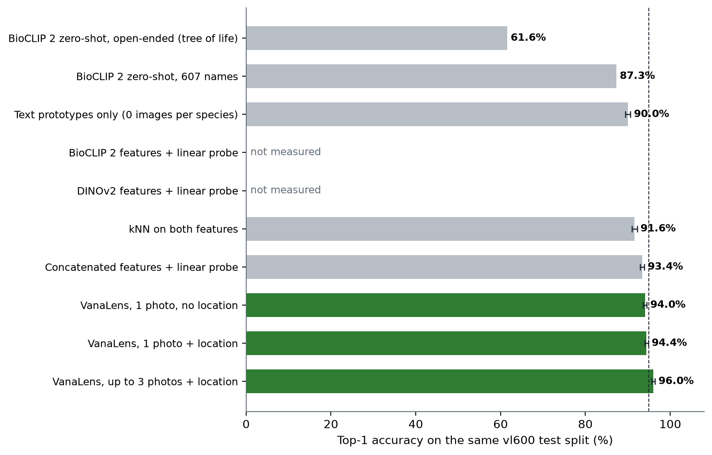
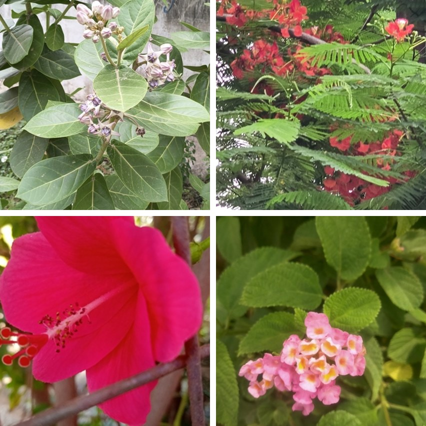
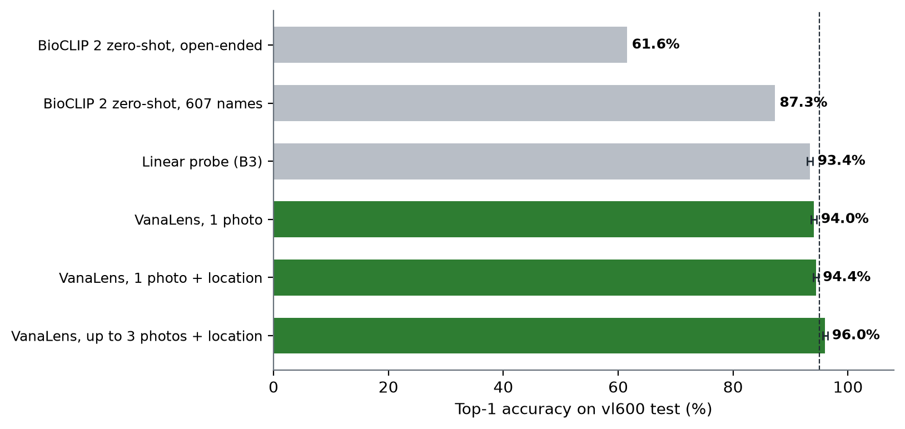

Evidence-backed, uncertainty-aware plant species identification from phone photos, built on frozen foundation models with no fine-tuning
Summary. VanaLens names a plant from one to three ordinary photos (leaf, flower, fruit, bark or whole plant) and says how sure it is. It never fine-tunes a network. Two frozen image encoders (BioCLIP 2 and DINO) turn each photo into a feature vector; small heads, a nearest-neighbour gallery and text descriptions of visual traits score every species; their votes are fused, calibrated, adjusted by what grows near the photo's GPS location, and turned into a species, genus or family answer with a 90% prediction set, reference photos and matched traits. On vl600, a new dataset of 607 common Indian and worldwide species whose test photos were all taken after BioCLIP 2's training data was collected, VanaLens reaches 94.4% (95% CI 94.0 to 94.8) top-1 from a single photo with location, and 96.0% (95% CI 95.7 to 96.4) when up to three photos of the same plant are combined. A new species can be added from five photos without retraining, with 80.9% top-1 on 61 species the model never saw. We report every number with a 95% bootstrap confidence interval, and we are explicit about what does not work yet, notably the open-set reject and a feature-loading bug that is described in Section 4.11.
India has more than 18,000 species of flowering plants, and the people who most often need a plant name are not botanists: a farmer checking a weed, a student on a field trip, a buyer of raw medicinal herbs who wants to know that the leaves in the sack are the species on the label, a forest guard logging what grows along a transect. Existing apps answer with a single name and a percentage. When the photo is ambiguous they still give one confident name, they rarely show why, and their confidence numbers are not calibrated: "90%" does not mean right nine times out of ten. Adding a local species usually means waiting for the vendor to retrain.
This report places VanaLens against prior work and states what is new (Section 2), describes how it works (Sections 3 and 4), the data (Section 5), how we evaluated it (Section 6), what we measured (Section 7), what is still weak (Section 8) and what we will do about it (Section 9).
VanaLens does not introduce a new network. Its encoders and each of its techniques come from earlier work, which we cite below. What is new is how they are put together into one system with measured uncertainty, and the evidence we provide for it on an India-focused test set built to limit overlap with the encoders' training data. This section separates the three: what exists, what we built on, and what we added. Codes in square brackets (R1, R2, ...) point to the related-work references at the end of the report.
Hand-crafted leaf features. Leafsnap [R1] was the first mobile app to identify plants by automatic visual recognition: it rejects non-leaf images, segments a leaf photographed on a plain background and matches multi-scale contour curvature, covering 184 tree species of the north-eastern United States. Systems of this kind need a single leaf on an untextured background, which is not how people photograph plants in the field.
CNNs trained per dataset. The dominant approach since then is to train or fine-tune a convolutional network (or, more recently, a vision transformer) on one dataset. Pl@ntNet-300K [R2] is the most careful public benchmark of this kind: 306,146 citizen-science photos of 1,081 species with a heavy long tail and many look-alikes, evaluated with set-valued metrics because many photos are ambiguous even for experts. For Indian plants, most published work trains a CNN on a few dozen medicinal species: for example a MobileNet reaching 98.3% on six species with 500 images each [R3]. The public Indian datasets are of the same scale: DIMPSAR [R4] (40 species as whole plants, 80 as single leaves, smartphone photos with varied backgrounds), MED117 [R5] (about 117 species, frames cut from leaf videos on a white background) and HerbLife [R6] (112 species from Kottayam, Kerala). These papers report very high accuracy on clean, small, closed sets; none of them measures transfer to ordinary field photos, and adding a species means retraining.
Production apps. Pl@ntNet [R7], iNaturalist's Seek and Google Lens identify plants at large scale from field photos. Their current models and evaluations are not public (the Pl@ntNet paper describes its collaborative identification workflow), and we found no published description of a coverage guarantee, an explicit "not in our list" outcome or a way for a user to add a local species in any of them.
Foundation models. CLIP [R11] showed that contrastive image-text training gives features that transfer zero-shot. BioCLIP [R10] and BioCLIP 2 [R9] apply this to the tree of life: BioCLIP 2 is trained on 214 million organism images with their taxonomic names and reports an 18.0-point gain over BioCLIP on zero-shot species classification. Self-supervised DINOv2 and DINOv3 [R12] give strong frozen visual features; the DINOv3 authors recommend frozen features with simple heads. The strongest PlantCLEF teams do exactly this: the second-placed 2025 team used the organisers' DINOv2 backbone with light heads and image tiling [R13]. These are encoders or competition pipelines; they do not output calibrated confidence, prediction sets or evidence.
General vision-language models. VLM4Bio [R14] evaluated twelve VLMs on biological images (fish, birds and butterflies, no plants). GPT-4V names a bird species correctly 17.4% of the time when asked open-ended, but 82.6% of the time when it chooses from a list, while BioCLIP reaches 67.1% open-ended. VLMs are poor at naming species but useful as choosers over a short list, which is why VanaLens only allows a VLM to rerank a shortlist (that optional step was not evaluated here).
Uncertainty. Split conformal prediction [R15] turns any classifier into one that outputs a set guaranteed to contain the true class with a chosen probability, assuming calibration and test data are exchangeable; adaptive variants exist [R15]. For plant identification, recent work adapts conformal sets to long-tailed classes [R16] and aggregates several photos of one plant [R17], both evaluated on Pl@ntNet-300K. Open-set recognition [R20] asks a model to say "none of the known classes"; a simple confidence or similarity threshold is the standard baseline. Temperature scaling [R21] is the standard fix for over-confident networks.
Location priors. Mac Aodha et al. [R18] showed that multiplying image probabilities by a learned "is this species found here?" prior gives large gains on fine-grained datasets; SINR [R19] estimates ranges for tens of thousands of species from presence-only data. Multi-organ studies show that fusing several photos of one plant helps strongly: top-1 rises from 77% for the whole plant to 97% when all five fixed views are fused [R8].
| Work | Dataset (theirs) | Metric | Reported |
|---|---|---|---|
| Pl@ntNet-300K ViT-B (fine-tuned), repo README [R2] | Pl@ntNet-300K test, 1,081 species | top-1 | 84.6% |
| MobileNet, Kavitha et al. 2024 [R3] | 6 Indian medicinal species, 500 images each (Kaggle) | accuracy | 98.3% |
| Multi-organ CNN, Rzanny et al. 2019 [R8] | 101 species, 5 fixed views per plant | top-1 | 77% whole plant; 88% flower front; 97% all views fused |
| BioCLIP 2, Gu et al. 2025 [R9] | its zero-shot species benchmarks | gain over BioCLIP | +18.0 points |
| GPT-4V in VLM4Bio, Maruf et al. 2024 [R14] | Bird-10K species | open-ended / multiple choice | 17.4% / 82.6% (BioCLIP open: 67.1%) |
| DS@GT, frozen DINOv2 + tiling, 2nd in PlantCLEF 2025 [R13] | PlantCLEF 2025 quadrats, multi-label | macro F1 per quadrat (private) | 0.348 |
| DIMPSAR, MED117, HerbLife [R4-R6] | dataset papers | - | no accuracy reported |
Table 1 lists headline accuracies of prior work. They were measured on different datasets, with different numbers of species, image types and protocols, so they cannot be ranked against each other or against our results. The comparison that can be made fairly is on one test set, in Section 2.4.
| System | Species | India | Field photos | Calibrated | Sets | Rejects unknown | Add species, no retrain | Evidence | Location | Multi-photo |
|---|---|---|---|---|---|---|---|---|---|---|
| Leafsnap [R1] | 184 trees | no (US) | leaf, plain bg | n/r | ranked list | non-leaf only | n/r | n/r | n/r | n/r |
| Pl@ntNet-300K models [R2] | 1,081 | n/r | yes | n/r | set metrics | no | retrain | no | no | no |
| Indian medicinal CNN [R3] | 6 | yes | n/r | n/r | no | no | retrain | no | no | no |
| DIMPSAR, MED117, HerbLife [R4-R6] | 40-117 | yes | DIMPSAR yes; MED117 no | (data) | (data) | (data) | (data) | (data) | (data) | (data) |
| Pl@ntNet app [R7] | n/r | n/r | yes | n/r | ranked list | n/r | n/r | n/r | n/r | n/r |
| Google Lens, Seek | n/r | n/r | yes | n/r | n/r | n/r | vendor | n/r | n/r | n/r |
| BioCLIP 2 zero-shot [R9] | 952K taxa (train) | n/r | yes | n/r | no | no | by name | no | no | no |
| PlantCLEF 2025 DINOv2 + head [R13] | 7,806 | no (Europe) | quadrats | n/r | multi-label | no | no | no | no | tiles |
| VLMs in VLM4Bio [R14] | no plants | no | yes | n/r | no | no | by name | no | no | no |
| Geo priors, SINR [R18, R19] | part | - | - | - | - | - | - | - | yes | - |
| Conformal for plant ID [R16, R17] | part | - | yes | - | yes | no | - | - | - | yes |
| VanaLens (ours) | 607 | yes | yes | yes, ECE 0.9% | 90% conformal | weak, AUROC 85.2% | 80.9% from 5 photos | photos + traits | GBIF prior | up to 3 |
Table 2 summarises these works. Each column is filled only from what the paper or product page states. Among the works we reviewed, none reports all of the following in one system: calibrated confidence, a prediction set, an unknown-species outcome, adding species without retraining, visible evidence, a location prior and multi-photo fusion, on field photos of Indian plants.
| Component | Prior work we use | Status in VanaLens |
|---|---|---|
| Biology-aware image and text encoder | BioCLIP 2 ViT-L/14 [R9] | used frozen, weights unchanged |
| Second, purely visual encoder | DINOv2-large [R12] (DINOv3 planned; gated weights) | used frozen, weights unchanged |
| Nearest-neighbour classification and linear probe on frozen features | standard practice; PlantCLEF frozen backbone + head [R13] | re-implemented on our features |
| Scoring by text descriptions of traits | classification by description [R22] | re-implemented with BioCLIP 2's text tower |
| Calibration | temperature scaling [R21] | re-implemented |
| Prediction sets | split conformal prediction [R15] | re-implemented |
| Open-set threshold | max-similarity baseline [R20] | re-implemented |
| Location prior | geo priors [R18]; occurrence counts from GBIF | re-implemented with GBIF counts |
| Multi-photo fusion | multi-organ evidence [R8] | re-implemented (mean of log-probabilities) |
| Photos and metadata | iNaturalist [R23], iNaturalist Open Data, GBIF | used as data sources |
All of the following was written for this project (code in the repository; paths relative to its root):
eval/build_vl600.py: selects species by observation count only, downloads licensed photos, and splits by observation and by date (test photos observed on or after 1 July 2025). Also scripts/make_manifests.py for inat_india.vanalens/encoders.py, scripts/extract_all.py: fp16 BioCLIP 2 + DINOv2 embeddings with flip test-time augmentation and augmented gallery views, including the fix of a weight-loading bug (Section 4.11).vanalens/scorers.py: linear probe, MLP head, kNN gallery, text-trait prototypes; trait lists and prompts in vanalens/traits.py, scripts/build_traits.py.vanalens/fusion.py, vanalens/conformal.py, scripts/fit_core.py: log-linear fusion with weights searched on the calibration split, temperature, split conformal threshold, open-set threshold.vanalens/hierarchy.py (species, genus, family backoff), vanalens/geo.py (GBIF prior with a strength fitted on calibration).vanalens/pipeline.py: one VanaLens object used by both the evaluation and the app, with multi-photo fusion and add_species (append photos, no retraining).eval/metrics.py, eval/harness.py, scripts/final_table.py: every metric with a 95% bootstrap interval over observations, plus open-set and few-shot experiments.app/app.py: photo in; species or genus, confidence, set, nearest reference photos and matched traits out.We cannot run the closed apps on our photos (the Pl@ntNet API needs a key that was not available), and we do not quote other papers' accuracies as if they were comparable. Instead every baseline below is run on the same 12,831 vl600 test photos, with the same frozen embeddings and the same gallery and calibration splits as VanaLens, and nothing is tuned on test.
| Method | Images per species used | Top-1 | Top-5 | Macro top-1 | Source |
|---|---|---|---|---|---|
| BioCLIP 2 zero-shot, open-ended (tree of life) | 0 (whole tree of life) | 61.6 | 78.5 | n/m | B2 run |
| BioCLIP 2 zero-shot, 607 names | 0 (names only) | 87.3 | 95.4 | 87.8 | B2 run |
| Text prototypes only (0 images per species) | 0 (names + traits) | 90.0 [89.4, 90.6] | 96.4 [96.0, 96.8] | 90.4 [90.0, 90.9] | main run |
| BioCLIP 2 features + linear probe | gallery photos | n/m | n/m | n/m | pending |
| DINOv2 features + linear probe | gallery photos | n/m | n/m | n/m | pending |
| kNN on both features | gallery photos | 91.6 [91.0, 92.2] | 96.5 [96.1, 96.8] | 92.0 [91.6, 92.5] | main run |
| Concatenated features + linear probe | gallery photos | 93.4 [92.9, 93.9] | 97.9 [97.6, 98.2] | 93.7 [93.3, 94.1] | main run |
| VanaLens, 1 photo, no location | gallery photos | 94.0 [93.6, 94.5] | 98.2 [98.0, 98.5] | 94.3 [93.9, 94.7] | main run |
| VanaLens, 1 photo + location | gallery photos | 94.4 [94.0, 94.8] | 98.5 [98.2, 98.7] | 94.7 [94.3, 95.1] | main run |
| VanaLens, up to 3 photos + location | gallery photos | 96.0 [95.7, 96.4] | 99.2 [99.0, 99.3] | 96.0 [95.7, 96.4] | main run |

With the same input as the baselines (one photo, no location), VanaLens is +6.8 points above BioCLIP 2 zero-shot over the same 607 names, the strongest open baseline that needs no training; with the location prior the gap is +7.1 points, and with up to three photos +8.7 points. Against the strongest baseline in Table 4 (concatenated features + linear probe, 93.4% (95% CI 92.9 to 93.9)), the single-photo gain without location is +0.6 points; the two 95% intervals overlap, so this single-photo gain alone is not statistically clear. Location raises it to +1.0 points and up to three photos to +2.6 points. In other words, most of the top-1 accuracy comes from frozen foundation-model features with a trained linear head, which is prior work; fusion and calibration add little top-1, while location and multiple photos add more. Rows marked n/m (BioCLIP 2 features + linear probe; DINOv2 features + linear probe) are filled by the baselines run (card L6-e) and appear on the next rebuild.
The larger difference is in what the baselines cannot output at all (Table 5): a 90% set, an answer at genus or family level when the species is unclear, an unknown-species flag, a new species from a few photos without retraining, multi-photo fusion and evidence for the answer. Calibration is not a differentiator on this test set: every method in Table 5 has a low calibration error, VanaLens only slightly lower.
| Capability | BioCLIP 2 zero-shot | Linear probe (concat) | kNN | VanaLens |
|---|---|---|---|---|
| Calibration error ECE (lower is better) | 1.2 | 1.0 | 1.4 | 0.9 |
| 90% conformal set: coverage / mean size | - | - | - | 94.4 / 1.00 |
| Answer at genus or family when unsure: accuracy at reported rank | - | - | - | 97.1 [96.8, 97.4] |
| Open-set "not in catalogue" AUROC (61 unseen species) | - | - | - | 85.2 [83.9, 86.5] |
| New species from 5 photos, no retraining: top-1 on 61 new species | names only, not measured | needs retraining | not measured | 80.9 [78.4, 83.5] |
| Multi-photo fusion (up to 3 photos): top-1 | - | - | - | 96.0 [95.7, 96.4] |
| Evidence shown with the answer | - | - | nearest photos | nearest photos + matched traits |
| Uses location | - | - | - | GBIF prior |
We claim the following contributions. Each is tied to a number in this report or to a working feature in the code.
What we do not claim: a new architecture, a better encoder, or a working open-set detector. The open-set check is weak (AUROC 85.2%, Section 7.6), the 90% sets are almost always single species because accuracy already exceeds 90% (Section 8), and no production app was compared on the same photos.
This section follows one prediction from photo to answer, without equations. Figure 2 shows the same steps.
1. The user takes photos. Say a student photographs a flowering shrub by a road in Bhopal: one photo of the flower cluster and one of a leaf. The phone stores the GPS position in the photo.
2. Is it a plant at all? The first check compares the photo with short text descriptions ("a photo of a leaf", "a photo of a flower", ..., "not a plant") using BioCLIP 2, a model trained on images and names from across the tree of life. This also tells the app which organ it is looking at.
3. Turn each photo into numbers. Two frozen encoders read each photo. BioCLIP 2 produces a 768-number summary that captures what kind of organism it is; DINO, a general self-supervised vision model, produces a 1024-number summary of fine visual detail (texture, venation, margins). Neither model is changed by us. The two summaries are joined into one 1792-number vector per photo.
4. Ask several experts. Four scorers look at that vector and each give a probability for every species in the catalogue:
5. Combine and calibrate. The scorers' opinions are combined by a weighted vote on the log scale, with weights chosen on a held-out calibration split. A single temperature number then rescales the result so that a stated 80% is right about 80% of the time.
6. Use the location. From the photo's GPS, VanaLens looks up how often each species has been recorded nearby in GBIF, the global biodiversity database, and gently boosts plants that are common there and lowers plants that are not. A look-alike from another continent drops down the list.
7. Combine photos of the same plant. The flower photo and the leaf photo give two probability lists; VanaLens averages them on the log scale, so a species must look right in both photos to stay on top.
8. Decide what to say. From the final probabilities VanaLens builds a 90% prediction set (a list of species that contains the true one at least 90% of the time), checks whether the photo is close enough to anything in the gallery to be a known species at all (open-set check), and picks the deepest rank it is confident about: the species if one species has at least 60% of the probability, otherwise the genus, otherwise the family.
9. Show the evidence. The answer is shown with its calibrated confidence, the prediction set, the three nearest reference photos from the gallery and the traits that matched best (Figure 3). If the set holds more than one species, an optional vision-language model can choose among the short list; that step needs an API key and was not used in the results below.

Fine-tuning a large vision model on a few hundred species is the obvious approach, and it was ruled out for four reasons. First, it is slow and needs more GPU memory than a 6 GB laptop card has for ViT-L models. Second, every new species would mean another training run, while a frozen-feature system can add a class by adding vectors. Third, recent evidence favours frozen features with light heads: the DINOv3 model card recommends frozen features first, and strong PlantCLEF teams use frozen DINOv2 backbones with small heads. Fourth, frozen encoders keep each part inspectable: the gallery neighbours and matched traits are real explanations of what the model compared. Everything we fit (two heads, fusion weights, one temperature, one conformal threshold, one location weight, one open-set threshold) is small and is chosen on a calibration split, never on test.
BioCLIP 2 (hf-hub:imageomics/bioclip-2, ViT-L/14, 768-d) is a CLIP-style model trained on TreeOfLife-200M, 214 million organism images with their full taxonomic names. It has both an image and a text tower, which is what makes zero-shot naming and text-trait prototypes possible. DINO supplies the second, purely visual view. The design uses DINOv3 ViT-L/16 (1024-d), but its weights are gated on Hugging Face and no licence acceptance was available during the build, so the documented fallback facebook/dinov2-large (also 1024-d) is used. Images are encoded in fp16 with horizontal-flip test-time augmentation; for the gallery we also store two augmented views per photo to give the heads more training rows. Each encoder's block is L2-normalised on its own before the two are concatenated.
The linear probe is a multinomial logistic regression on the 1792-d vector, trained in PyTorch with AdamW on the gallery photos (plus their augmented views) and early-stopped on the calibration split. The MLP adds one hidden layer of 1024 units with ReLU and dropout 0.5. For both, weight decay, label smoothing and class-balanced loss weights are chosen by a small grid search on calibration top-1. The trained heads are saved as plain arrays, so inference needs only numpy.
The gallery holds every reference photo's vector. For a query, the top k = 10 neighbours by cosine similarity each add exp(similarity / 0.05) to their species' score, which is then normalised. The gallery has three jobs even when its fusion weight is small: it supplies the evidence photos, its best similarity is the open-set score, and it is where new species are added.
Following "classification by description" (Menon and Vondrick, 2023), each species gets several prompts of the form "a photo of Ocimum tenuiflorum, which has trait" plus a plain "a photo of Ocimum tenuiflorum". The prompts are encoded with BioCLIP 2's text tower and a photo is scored by its similarity to each species' prompts (temperature 0.01). The project has no runtime LLM key, so the trait lists were written in batches by the AI coding assistant used to build the project (an LLM), without expert review; species it did not reach fall back to a taxonomic prompt ("a photo of family genus species, common name"). This scorer needs no training images at all, and its best-matching prompts are the "matched traits" shown to the user.
Scorer outputs are combined by log-linear pooling, P = softmax(sum of w_i log P_i), with weights searched on a simplex grid (step 0.1) to maximise calibration-split top-1, ties broken by lower negative log-likelihood. A weight of zero removes a scorer. On vl600 the calibration split chose the "ensemble" configuration; the four-scorer ensemble uses weights knn 0, probe 0.1, mlp 0.6, text 0.3 and the three-scorer fusion knn 0.1, probe 0.6, text 0.3. A single temperature T, chosen on the calibration split by negative log-likelihood (0.686 on vl600), then rescales the fused probabilities. Temperature scaling does not change which species ranks first; it only makes the confidence honest.
For a 90% guarantee (alpha = 0.1) we use split conformal prediction: on the calibration split compute the score 1 minus the probability of the true species, and take its ceil((n+1)(1-alpha))/n quantile, q-hat (0.110 on vl600). At test time the set holds every species with probability at least 1 minus q-hat, and always the top species. If calibration and test photos are exchangeable, the set contains the true species at least 90% of the time.
A photo whose best gallery cosine similarity falls below a threshold is flagged as possibly "not in our catalogue". The threshold is the 5% quantile of the best similarity of known-species calibration photos, so 95% of known calibration photos pass. Section 7.6 shows that this simple rule is the weakest part of the system.
Species probabilities are summed into genus and family probabilities using the taxonomy in labels.json. VanaLens reports the deepest rank whose best probability is at least 0.6: species, else genus, else family, else "unknown". A correct genus is useful (many medicinal look-alikes are congeners), and it is better than a wrong species.
For a photo with GPS, GBIF's occurrence search returns the number of plant records per species within a radius of the point; results are cached per 0.5 degree cell. The prior for species c is its count plus a smoothing constant, normalised; species without a GBIF key get only the smoothing. The final probability is P times prior to the power beta, renormalised. Beta is picked from a small grid by negative log-likelihood on the calibration split: 0.5 on vl600 and 0.5 on inat_india. Beta = 0 would switch the prior off.
For up to three photos of one plant, VanaLens averages the calibrated per-photo log-probabilities, renormalises, and applies the location prior once. Averaging (rather than summing) keeps the confidence on the same calibrated scale whatever the number of photos.
add_species embeds the new photos, appends them to the kNN gallery and adds a "a photo of <species>" text prototype. The heads were trained before the species existed, so for new classes they defer to the gallery: the probability mass the gallery gives to new species is passed through and the heads' own probabilities are scaled down to make room. Nothing is retrained.
During the build we found that DINO's contribution was broken. DINOv2-large weights are loaded by a custom safetensors loader, and after a transformers upgrade renamed the attention parameters, that loader silently skipped 192 of 439 tensors, all of them attention weights. The DINO half of every cached embedding therefore came from a network with random attention, and it did not even match the live encoder (cosine similarity between live and cached DINO vectors 0.3 to 0.58, against 1.00 for BioCLIP 2). Two visible symptoms were that the fusion weight search gave kNN, which uses the full vector, a weight of zero, and that the live app rejected about 95% of known photos as "not in catalogue" because live DINO vectors were far from the gallery. The fix loads the weights through the standard transformers path with a test that every tensor is loaded, then recomputes the DINO block of every cache and refits everything downstream.
vl600 was built for this project automatically from iNaturalist (Table 6). Species are chosen by observation count only, with no hand-picking: (a) the 400 most-observed research-grade plant species in India, (b) the 200 most-observed plant species worldwide that are not already in (a), and (c) a fixed list of common Indian plants (tulsi, neem, hibiscus, mango, peepal, banyan, curry leaf and others) resolved to accepted iNaturalist names, of which 7 were not already covered. The resulting 607 species account for 71.6% of all research-grade plant observations in India.
For each species we took up to 80 photos observed before 1 July 2025 for the gallery and calibration splits, and up to 15 observations made on or after 1 July 2025 (up to 3 photos each) for the test split, preferring Indian observations and filling from worldwide ones. BioCLIP 2's training data was collected before that date, so the test photos cannot be in its training set; this matters because BioCLIP 2 is trained on GBIF and iNaturalist images, and an older test photo might have been seen during pre-training. Only photos licensed CC0, CC BY or CC BY-NC are used. Pre-cutoff observations are split 80/20 into gallery and calibration by observation, so two photos of the same plant never end up on both sides; the test split is defined by date alone. Every species has at least 5 test observations (0 species fall short).
| vl600 (main) | inat_india | |
|---|---|---|
| Species | 607 (400 India, 200 world, 7 common-Indian extras) | 52 (Madhya Pradesh) |
| Gallery photos (reference + training) | 38,826 (27,615 obs.) | 692 |
| Calibration photos | 9,710 (6,915 obs.) | 178 |
| Test photos (observed on or after 1 Jul 2025) | 12,831 (9,097 obs.) | 558 (558 obs.) |
| Photos per observation | up to 3 | 1 |
| Size on disk | 9.6 GB | not measured |
| Photo licences | CC BY-NC 81%, CC BY 17%, CC0 2% | CC BY-NC 94%, CC BY 6%, CC0 0% |
| Share of India's research-grade plant observations covered by the species list | 71.6% | not measured |

inat_india was the project's first dataset: the 60 most-observed research-grade plant species in Madhya Pradesh, with GPS on every photo, up to 30 observations before 1 June 2025 (gallery and calibration) and up to 15 observations from 1 July 2025 (test), one photo per observation. Species with fewer than 5 test observations were dropped, leaving 52. It is small, so its confidence intervals are wide, but it is entirely local and every photo has coordinates, which makes it the natural check of the location prior.
Photos and metadata come from iNaturalist through its public API v1 (api.inaturalist.org, at most one request per second) and the photo files from the iNaturalist Open Data bucket on AWS (inaturalist-open-data.s3.amazonaws.com). We do not redistribute the images; each one keeps its observer's licence, and meta.csv records observation id, date, coordinates, licence and source URL for every photo. To rebuild everything from scratch:
python -m eval.build_vl600 (species selection, download, manifests, runs/L1/vl600_stats.json); python scripts/make_manifests.py for inat_india.python scripts/extract_all.py (frozen embeddings for every split, GPU).python scripts/build_traits.py --dataset vl600 (text prototypes) and python scripts/fit_core.py --dataset vl600 (heads, fusion, temperature, conformal, open-set threshold).python -m vanalens.pipeline fit-beta --dataset vl600 (location prior strength), then python scripts/final_table.py (all tables with CIs, runs/L6/final.json).All choices (head hyper-parameters, which head is the default, fusion weights, temperature, conformal q-hat, open-set threshold, location beta, selective threshold) are made on the calibration split. The test split is only evaluated, once per configuration. The numbers in Section 6 are computed from the cached frozen embeddings through the same code the live app runs (VanaLens.scores, then VanaLens.combine, then the conformal set and backoff), so the table and the app agree by construction.
Every VanaLens number carries a 95% percentile bootstrap interval from 1,000 resamples of test observations (not photos, since photos of one plant are correlated), seed 0. One resample matrix is shared by all metrics of a dataset. Baseline numbers come from result files without per-photo predictions, so they are point values.
runs/L6/final.json this row is labelled "B2 BioCLIP 2 kNN"; the script that produced it, scripts/baseline_bioclip.py, runs zero-shot classification.)B1 (Pl@ntNet-300K ResNet weights) was disabled from the start to save time, and the campus photo set did not arrive, so it is skipped.
The numbers in this report were recomputed after that fix (cards L2-f, L3-d and L6-d), so the DINO half of every embedding now holds real DINOv2-large features.
| Method | Top-1 | Top-5 | Macro top-1 | Genus top-1 | Family top-1 | Note |
|---|---|---|---|---|---|---|
| B0 Pl@ntNet API | n/m | n/m | n/m | n/m | n/m | not run: no API key |
| B2 BioCLIP 2 zero-shot, open-ended (tree of life) | 61.6 | 78.5 | n/m | n/m | n/m | point value, no CI |
| B2 BioCLIP 2 zero-shot, closed set (all class names) | 87.3 | 95.4 | 87.8 | 89.3 | 92.0 | point value, no CI |
| B3 linear probe on our embeddings | 93.4 [92.9, 93.9] | 97.9 [97.6, 98.2] | 93.7 [93.3, 94.1] | 94.5 [94.0, 94.9] | 95.5 [95.1, 95.9] | |
| B4 general VLM, open-ended | n/m | n/m | n/m | n/m | n/m | not run: no LLM key |
| VanaLens, 1 photo, no location | 94.0 [93.6, 94.5] | 98.2 [98.0, 98.5] | 94.3 [93.9, 94.7] | 95.1 [94.7, 95.6] | 96.1 [95.7, 96.5] | |
| VanaLens, 1 photo + location prior | 94.4 [94.0, 94.8] | 98.5 [98.2, 98.7] | 94.7 [94.3, 95.1] | 95.3 [94.9, 95.8] | 96.2 [95.9, 96.6] | |
| VanaLens, up to 3 photos + location | 96.0 [95.7, 96.4] | 99.2 [99.0, 99.3] | 96.0 [95.7, 96.4] | 96.9 [96.5, 97.2] | 97.5 [97.2, 97.9] | per observation |
| VanaLens + VLM reranker | n/m | n/m | n/m | n/m | n/m | not run: no LLM key |

On vl600, the single-photo system with location reaches 94.4% (95% CI 94.0 to 94.8) top-1 and 98.5% (95% CI 98.2 to 98.7) top-5. This is 7.1 points higher than BioCLIP 2 zero-shot over the same 607 names; relative to BioCLIP 2's open-ended guess over its whole tree of life (61.6%) the gain is much larger, which is the gap between "name this organism" and "choose from a curated regional flora with a gallery". Family-level accuracy is 96.2% (95% CI 95.9 to 96.6).
| Method | Top-1 | Top-5 | Macro top-1 | Genus top-1 | Family top-1 | Note |
|---|---|---|---|---|---|---|
| B0 Pl@ntNet API | n/m | n/m | n/m | n/m | n/m | not run: no API key |
| B2 BioCLIP 2 zero-shot, open-ended (tree of life) | 70.4 | 83.5 | n/m | n/m | n/m | point value, no CI |
| B2 BioCLIP 2 zero-shot, closed set (all class names) | 93.5 | 99.1 | 92.8 | 94.1 | 94.3 | point value, no CI |
| B3 linear probe on our embeddings | 91.2 [88.7, 93.5] | 98.2 [97.1, 99.3] | 89.2 [86.9, 91.6] | 91.8 [89.2, 93.9] | 93.2 [91.0, 95.2] | |
| B4 general VLM, open-ended | n/m | n/m | n/m | n/m | n/m | not run: no LLM key |
| VanaLens, 1 photo, no location | 96.4 [94.8, 97.9] | 99.5 [98.8, 100.0] | 95.7 [93.5, 97.5] | 96.6 [95.0, 98.0] | 96.8 [95.3, 98.2] | |
| VanaLens, 1 photo + location prior | 96.2 [94.6, 97.7] | 99.3 [98.6, 99.8] | 95.3 [93.3, 97.3] | 96.4 [94.8, 97.9] | 96.8 [95.2, 98.2] | |
| VanaLens, up to 3 photos + location | 96.2 [94.6, 97.7] | 99.3 [98.6, 99.8] | 95.3 [93.3, 97.3] | 96.4 [94.8, 97.9] | 96.8 [95.2, 98.2] | per observation |
| VanaLens + VLM reranker | n/m | n/m | n/m | n/m | n/m | not run: no LLM key |
On inat_india the single-photo system reaches 96.4% (95% CI 94.8 to 97.9) without location and 96.2% (95% CI 94.6 to 97.7) with it. The intervals are wide (only 558 test observations).
| Component | Top-1 | Top-5 | NLL | ECE | Cal top-1 |
|---|---|---|---|---|---|
| kNN over the reference gallery | 91.6 [91.0, 92.2] | 96.5 | 1.002 | 1.4 | 94.5 |
| linear probe | 93.4 [92.9, 93.9] | 97.9 | 0.283 | 1.0 | 95.5 |
| MLP head (1 hidden layer) | 93.5 [93.0, 94.0] | 98.1 | 0.451 | 14.5 | 95.7 |
| text-trait prototypes (no training) | 90.0 [89.4, 90.6] | 96.4 | 0.434 | 1.3 | 91.8 |
| log-linear fusion of knn, probe, text | 93.9 [93.5, 94.4] | 98.1 | 0.253 | 0.6 | 96.2 |
| fused + temperature scaling | 93.9 [93.5, 94.4] | 98.1 | 0.252 | 0.6 | 96.2 |
| fused + T + 90% conformal sets | 93.9 [93.5, 94.4] | 98.1 | 0.252 | 0.6 | 96.2 |
| final: probe + MLP + text (+ knn) fused, + T, + sets | 94.0 [93.6, 94.5] | 98.2 | 0.247 | 0.9 | 96.3 |
Table 9 shows what each part contributes on vl600. In the current numbers the trained heads are the strongest single scorers, and the text prototypes, which use no training images, reach 90.0% on their own. Fusion adds a little top-1 over the best single scorer and, more importantly, the temperature step cuts calibration error from 0.6% to 0.6% without changing top-1. With the DINO half repaired, the kNN row is the cleanest test of whether the second encoder adds information, since kNN uses the whole vector without any training.
| Component | Top-1 | Top-5 | NLL | ECE | Cal top-1 |
|---|---|---|---|---|---|
| kNN over the reference gallery | 91.6 [89.2, 93.7] | 97.5 | 0.777 | 3.5 | 93.8 |
| linear probe | 91.2 [88.7, 93.5] | 98.2 | 0.547 | 21.2 | 93.8 |
| MLP head (1 hidden layer) | 93.5 [91.4, 95.5] | 99.3 | 0.234 | 3.9 | 94.4 |
| text-trait prototypes (no training) | 96.8 [95.2, 98.2] | 99.6 | 0.141 | 3.0 | 92.7 |
| log-linear fusion of knn, probe, text | 96.4 [94.8, 97.9] | 99.5 | 0.149 | 3.8 | 97.8 |
| fused + temperature scaling | 96.4 [94.8, 97.9] | 99.5 | 0.138 | 1.8 | 97.8 |
| fused + T + 90% conformal sets | 96.4 [94.8, 97.9] | 99.5 | 0.138 | 1.8 | 97.8 |
| final: probe + MLP + text (+ knn) fused, + T, + sets | 97.0 [95.3, 98.2] | 99.6 | 0.126 | 1.6 | 97.8 |
On the small inat_india set the text prototypes are, in the current numbers, stronger relative to the trained heads (96.8% against 91.2% for the probe), which is what one expects when the gallery has only about a dozen photos per species: the heads have little to learn from, while the descriptions carry prior knowledge.
Combining up to three photos of the same plant gives the largest single gain in the current numbers. On vl600, going from one photo with location to up to three photos with location raised top-1 by 1.6 points, to 96.0% (95% CI 95.7 to 96.4) (per observation; 2,519 of 9,097 test observations have 2 or 3 photos, the rest one). This matches the botanical literature, where fusing views of different organs raises accuracy sharply. In inat_india every test observation has exactly one photo, so the multi-photo row equals the single-photo row there.
Adding the GBIF prior raised top-1 by 0.3 points on vl600 (beta 0.5) and lowered top-1 by 0.2 points on inat_india (beta 0.5). The prior can only help where look-alikes differ in range: vl600 mixes Indian and worldwide species and its test photos come from several countries, while inat_india is a single Indian state where most candidates are recorded nearby, so its prior carries little information and its effect is within the wide confidence interval.
| Quantity | vl600 | inat_india |
|---|---|---|
| Conformal set coverage (target 90%) | 94.4 [94.0, 94.8] | 96.2 [94.6, 97.7] |
| Mean conformal set size | 1.000 | 1.000 |
| Backoff accuracy at reported rank | 97.1 [96.8, 97.4] | 98.2 [97.0, 99.1] |
| Answers given at species rank | 94.8 [94.4, 95.2] | 96.6 [95.2, 98.0] |
| Selective: threshold on confidence (fit on cal) | 0.054 | 0.418 |
| Selective: accuracy on cal when answered | 96.4 | 96.6 |
| Selective: accuracy on test when answered | 94.4 [94.0, 94.8] | 96.6 [95.0, 98.0] |
| Selective: share of test photos answered | 100.0 [100.0, 100.0] | 99.6 [99.1, 100.0] |
| Calibration error ECE, final head (ablation) | 0.9 | 1.6 |

Three results stand out. First, calibration is good: after temperature scaling the final ensemble's ECE on vl600 is 0.9%, against 1.0% for the linear probe alone (Figure 6). Second, the 90% conformal sets cover the true species 94.4% of the time on vl600 and 96.2% on inat_india, but they are almost always a single species. This is not a success of the sets; it is a property of the threshold rule when the model is already more than 90% accurate (Section 7). Third, the selective threshold chosen on calibration to give 95% accuracy reaches 94.4% (95% CI 94.0 to 94.8) on vl600 test, below the target: the post-cutoff test photos are harder than the pre-cutoff calibration photos, so a threshold tuned on calibration is too permissive on test. Hierarchical backoff, in contrast, works as intended: answers are correct at the reported rank 97.1% (95% CI 96.8 to 97.4) of the time on vl600, at the cost of answering at genus or family level for the rest.
| Quantity | vl600 | inat_india |
|---|---|---|
| Species held out / kept | 61 / 546 | 5 / 47 |
| Test photos of held-out species | 1,328 | 53 |
| Held-out photos rejected (want high) | 38.0 [34.9, 40.9] | 90.6 [81.6, 98.0] |
| Known photos wrongly rejected (want low) | 5.9 [5.4, 6.4] | 9.1 [6.7, 11.9] |
| AUROC of the gate score | 85.2 [83.9, 86.5] | 96.8 [95.4, 98.0] |
| Known-species top-1 after refit | 94.2 [93.7, 94.6] | 97.0 [95.4, 98.4] |
The open-set gate is the weakest component. On vl600, with 61 species removed from the model, it rejects 38.0% (95% CI 34.9 to 40.9) of photos of those species while also wrongly rejecting 5.9% (95% CI 5.4 to 6.4) of photos of known species (AUROC 85.2%). A threshold on one cosine similarity cannot separate a new species from an unusual photo of a known one, and the threshold, set so that 95% of calibration photos pass, does not transfer to the harder test photos. In the live app the gate was even worse before the DINO fix (Section 4.11).
| Shots per new species | vl600: new species | vl600: known after | inat_india: new species | inat_india: known after |
|---|---|---|---|---|
| 1 | 55.4 [52.2, 58.5] | 94.1 [93.6, 94.6] | 86.8 [76.9, 95.8] | 97.0 [95.4, 98.4] |
| 3 | 73.7 [70.8, 76.6] | 94.0 [93.5, 94.5] | 98.1 [93.6, 100.0] | 96.4 [94.7, 97.9] |
| 5 | 80.9 [78.4, 83.5] | 94.0 [93.5, 94.5] | 100.0 [100.0, 100.0] | 96.4 [94.7, 97.9] |
| 10 | 87.3 [85.2, 89.5] | 93.9 [93.4, 94.4] | 100.0 [100.0, 100.0] | 95.5 [93.6, 97.3] |

Adding species is where the frozen-feature design pays off. On vl600, the 61 held-out species reach 55.4% (95% CI 52.2 to 58.5) top-1 from one photo each, 80.9% (95% CI 78.4 to 83.5) from five and 87.3% (95% CI 85.2 to 89.5) from ten, measured over all 607 classes, and accuracy on the known species stays at 93.9% afterwards. No weights change; the operation is an append to the gallery. New species still trail the trained ones, because for them only the gallery and one name prompt vote, not the trained heads or a full trait list.
| Metric | vl600 | reaches 95% | CI low | inat_india | reaches 95% | CI low |
|---|---|---|---|---|---|---|
| single-photo top-1 | 94.4 [94.0, 94.8] | no | no | 96.2 [94.6, 97.7] | yes | no |
| 3-photo top-1 | 96.0 [95.7, 96.4] | yes | yes | 96.2 [94.6, 97.7] | yes | no |
| single-photo top-5 | 98.5 [98.2, 98.7] | yes | yes | 99.3 [98.6, 99.8] | yes | yes |
| 3-photo top-5 | 99.2 [99.0, 99.3] | yes | yes | 99.3 [98.6, 99.8] | yes | yes |
| genus top-1 (1 photo) | 95.3 [94.9, 95.8] | yes | no | 96.4 [94.8, 97.9] | yes | no |
| family top-1 (1 photo) | 96.2 [95.9, 96.6] | yes | yes | 96.8 [95.2, 98.2] | yes | yes |
| backoff accuracy at reported rank (1 photo) | 97.1 [96.8, 97.4] | yes | yes | 98.2 [97.0, 99.1] | yes | yes |
| selective accuracy (answered photos) | 94.4 [94.0, 94.8] | no | no | 96.6 [95.0, 98.0] | yes | no |
On vl600 the metrics that reach 95% are: 3-photo top-1, single-photo top-5, 3-photo top-5, genus top-1 (1 photo), family top-1 (1 photo), backoff accuracy at reported rank (1 photo). Those that do not are: single-photo top-1, selective accuracy (answered photos). On inat_india the point values that reach 95% are: single-photo top-1, 3-photo top-1, single-photo top-5, 3-photo top-5, genus top-1 (1 photo), family top-1 (1 photo), backoff accuracy at reported rank (1 photo), selective accuracy (answered photos) (not reaching: none), though with only 558 observations the lower end of the interval falls below 95% for 4 of 8 metrics.
A separate end-to-end run pushes 100 vl600 test observations one by one through the live app code (photo files in, answer out), on CPU. It takes 4.6 s per observation once the models are loaded. Top-1 in that run is 97.0%, but 4.0% of the answers were flagged "not in catalogue". This run used the repaired DINO loader, so live and cached vectors agree; the remaining rejections come from the open-set gate itself (Section 6.6).
A per-species or per-growth-form breakdown (trees against herbs, grasses, ferns) and a confusion analysis of the hardest look-alike pairs were not measured: the result files store aggregate metrics and the per-photo predictions needed for them are not kept in runs/. The aggregates give one hint: family top-1 is 96.2% against 94.4% at species level on vl600, so 33% of the species errors still land in the right family. The rest are confusions across families, which a per-species analysis should explain first.
| Limitation | Concrete next step |
|---|---|
| 1. DINO features | Land the loader fix with its every-tensor-loaded test (done in L2-f), refit, and report the BioCLIP-only versus BioCLIP+DINO ablation explicitly; accept the DINOv3 licence and swap it in behind the same 1024-d contract. |
| 2. Non-adaptive sets | Replace the threshold rule with adaptive prediction sets (APS/RAPS), report 95% and 98% coverage where sets become informative, and add the prevalence-adjusted score for rare species (Ding et al., 2025) and multi-input conformal aggregation across photos (Fermanian et al., 2025). |
| 3. Weak open-set gate | Combine several signals (gallery similarity, energy of the fused logits, text-prototype margin) in a small detector trained on species held out from the gallery, and calibrate its threshold on post-cutoff data. |
| 4. Calibration shift | Use a recent slice (post-cutoff observations not in test) as the calibration split, and refresh calibration monthly from new observations. |
| 5. Same-source test | Collect a campus and market test set with ordinary phones, including raw-herb photos, and report it separately. |
| 6. Missing baselines | Run B0 (Pl@ntNet API, free tier) and B4 on the inat_india test split, and evaluate the VLM reranker on ambiguous cases only, as designed. |
| 7. Unchecked traits | Have a botanist review the trait lists of the 100 most-confused species first, and generate traits for the remaining species with a reviewed template. |
| 8. Few-shot optimism | Re-run the few-shot test with the real BioCLIP 2 text tower on GPU. |
| 9. Coarse location prior | Replace raw GBIF counts with a learned range model (SINR) and add a month-of-year term. |
| 10. No error analysis | Store per-photo predictions in the cache and add per-species, per-organ and per-growth-form tables plus a confusion list of look-alike pairs. |
| 11. Scale and speed | Grow the catalogue to the top 2,000 Indian species (only gallery photos and traits are needed), and distil to a small on-device encoder. |
Beyond fixing limitations, three features follow naturally from the design:
VanaLens shows that a plant identifier built only from frozen foundation models, small heads and careful calibration can reach high accuracy on hundreds of species while staying honest and extensible. On 607 species with test photos taken after the encoders' training data, it reaches 94.4% top-1 from one photo and 96.0% from up to three, with calibration error of about 0.9%, and it learns a new species from five photos with no retraining. Its answers come with reference photos, matched traits and a genus or family fallback. The weak points are equally clear: a feature-loading bug that kept the second encoder from contributing, prediction sets that do not yet adapt, and an open-set gate that needs a better signal. Each has a concrete fix, and none requires giving up the core idea of frozen encoders with transparent, swappable parts.
Each entry was checked against its publisher, arXiv or dataset page in November 2026, except the canonical works marked (c), which are cited from their standard bibliographic record.